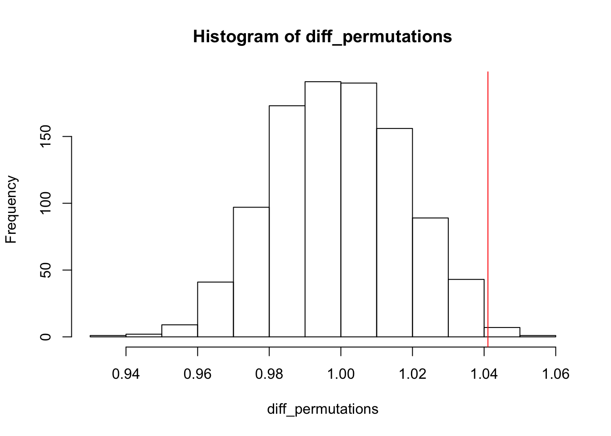

Set a seed to make the permutation analysis reproducible.
set.seed(9)Import the mice weights.
weights <- read.delim("../data/weights.txt",
stringsAsFactors = FALSE)
head(weights)## mouse grams
## 1 Wild type 19.43952
## 2 Wild type 19.76982
## 3 Wild type 21.55871
## 4 Wild type 20.07051
## 5 Wild type 20.12929
## 6 Wild type 21.71506Calculate the observed difference in weight between wild type and transgenic mice.
# Calculate the mean difference in weight between Wild type and Transgenic mice.
#
# mouse - character vector of type of mouse: Wild type, Transgenic
# grams - numeric vector of mouse weights (grams)
get_diff <- function(mouse, grams) {
stopifnot(length(mouse) == length(grams))
mean(grams[mouse == "Transgenic"]) / mean(grams[mouse == "Wild type"])
}
diff_observed <- get_diff(weights$mouse, weights$grams)
diff_observed## [1] 1.041071Perform 1000 permutations and calculate the mean difference in each permuted data set.
n_perms <- 1000
permutations <- replicate(n = n_perms, expr = sample(weights$mouse),
simplify = FALSE)
diff_permutations <- vapply(permutations, get_diff, grams = weights$grams,
numeric(1))
hist(diff_permutations)
abline(v = diff_observed, col = "red")
Calculate a two-sided permutation-based p-value. In other words, count the number of test statistics generated from the permutations with a mean difference that is greater in magnitude that the observed difference, and divide by the number of permutations.
p_perm <- (sum(diff_permutations <= -abs(diff_observed)) +
sum(diff_permutations >= abs(diff_observed))) / length(diff_permutations)
p_perm## [1] 0.007The p-value is 0.007.